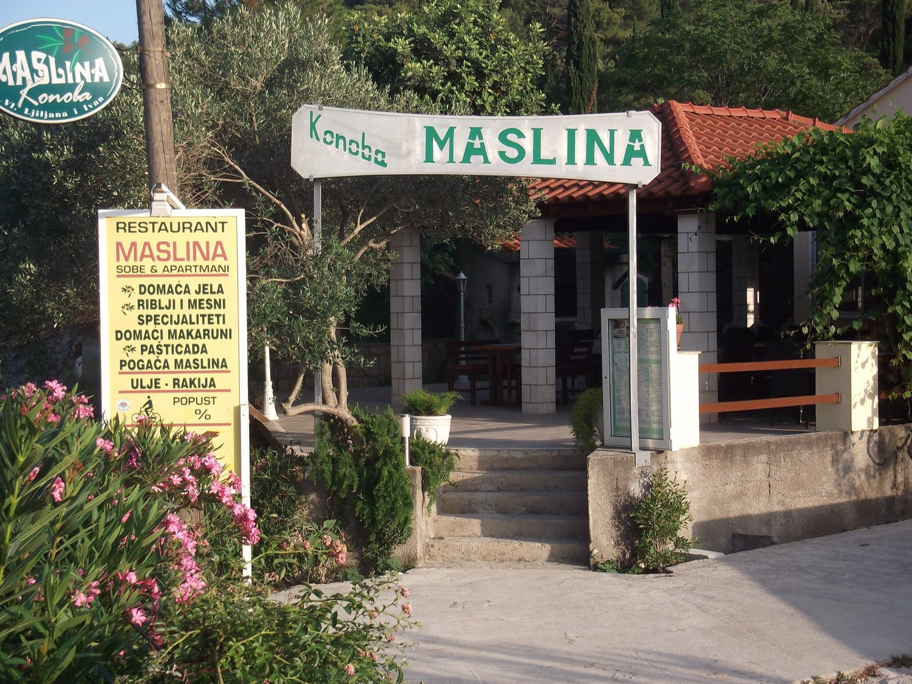
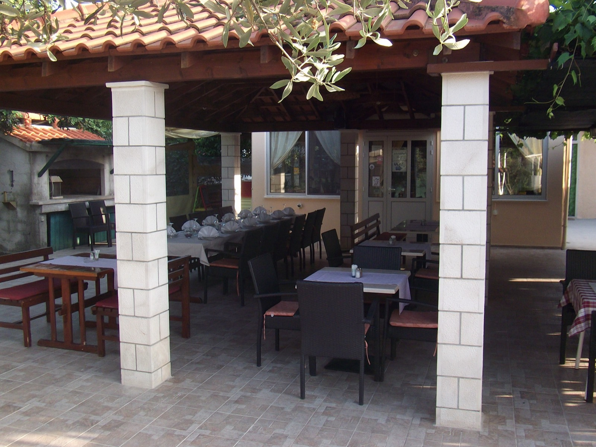
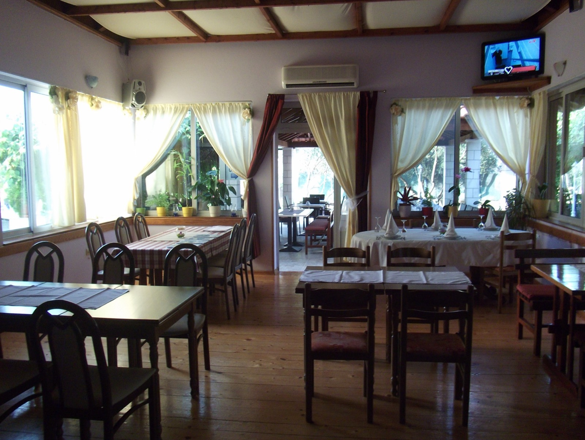
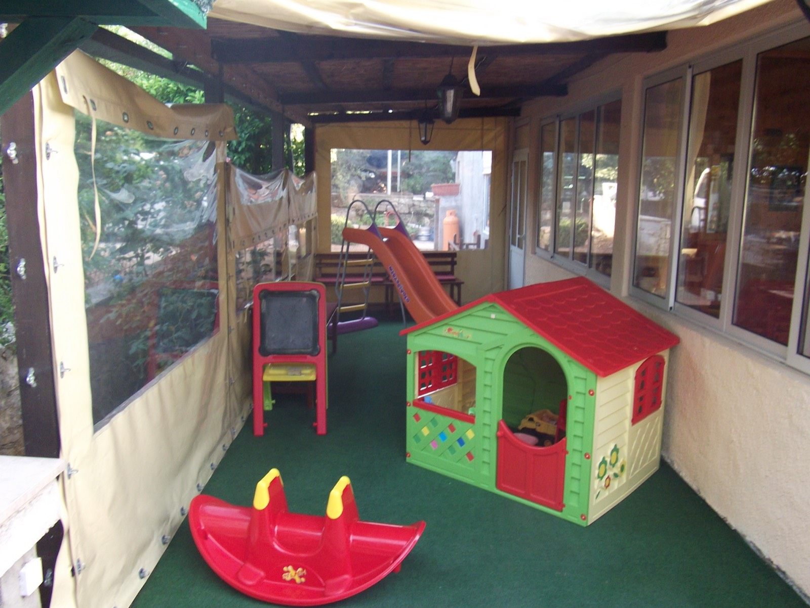
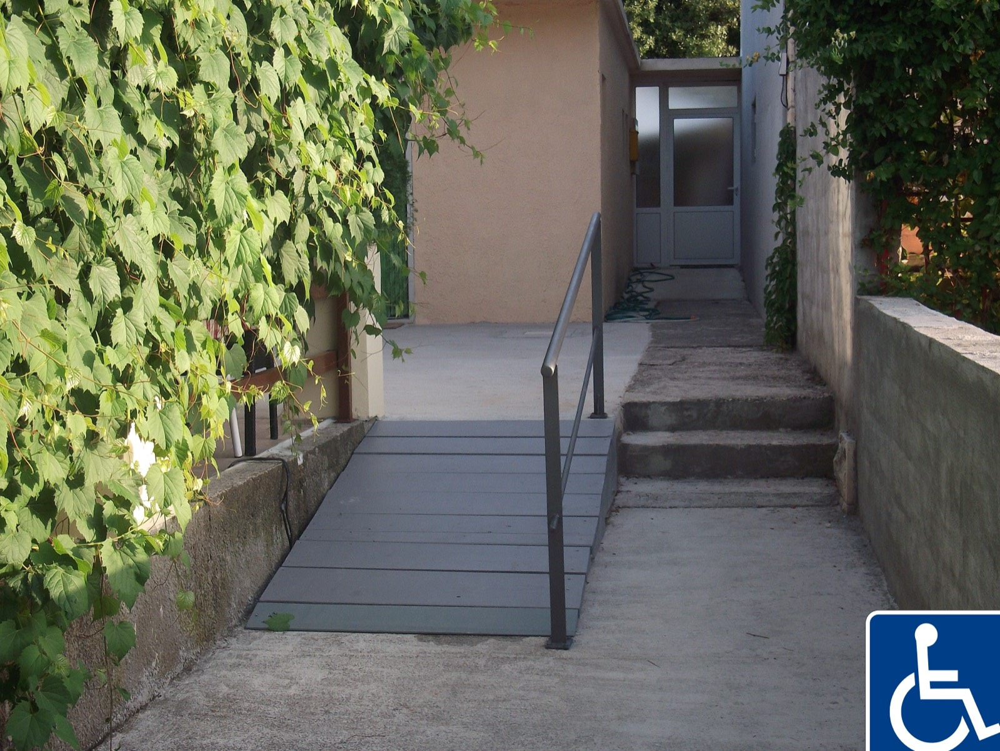

Žrnovski makaruni
Stari specijalitet susjednog Žrnova, domaća tjestenina. Kod nas s mesnim umakom, a kao makaruni gambori s kozicama u umaku od rajčice.
Ako tražite miran i ugodan ambijent te dobru hranu, tu smo za Vas. Žrnovski makaruni, pašticada s domaćim njokima, pogača „Maslina” i riba sa žara, na natkrivenoj terasi uz cestu od Korčule prema Lumbardi.



„Probajte nas i nećete požaliti, imamo najbolju hranu u okolici.”
Konoba Maslina pazi na svoje goste i njihove želje. Domaća atmosfera pomaže vam da usporite i opustite se u ovim brzim i žurnim vremenima.
Na stolu su domaća jela, riblji i mesni specijaliteti, domaći makaroni i pašticada, a uz njih domaće maslinovo ulje i rakija.
Iz jelovnika smo izdvojili jela po kojima nas gosti pamte. Cijeli jelovnik je na posebnoj stranici.
Stari specijalitet susjednog Žrnova, domaća tjestenina. Kod nas s mesnim umakom, a kao makaruni gambori s kozicama u umaku od rajčice.
Punjeni i marinirani mesni file s domaćim njokima.
Na žaru pečene balancane, tikvice i paprike, sa sirom.
Pečena ispod peke, za najmanje četiri osobe. Isto vrijedi i za mesnu peku.
Gusta juha na bazi maslinova ulja s lećom, slanutkom, orzom, grahom, sikiricom i pšenicom.
Riba prve i druge klase sa žara, pržene lignje, rižoto od plodova mora i riblja plata za dvoje.
Kako izgleda obrok kod nas, redom kojim ga nosimo na stol.
Pogačice, pršut, sir i kozji sir, slana riba ili riblja pašteta.
Dnevna juha, sočivo, pogača „Maslina” ili balancane „Pec”.
Makaruni, pašticada, meso i riba sa žara, ili peka koju ste naručili unaprijed.
Domaći kolač, turska kava i čašica domaće rakije ili prošeka.


Ugođaj je domaći, a hrana nebeska i tako autentična. Sir je bio fenomenalan, a domaći makaruni s mesnim umakom najbolje jelo od tjestenine ikad.
Mary R.dojam gošće s konobamaslina.com (skraćeno, prevedeno s engleskog)Organiziramo vjenčanja, krštenja, pričesti i krizme. Nazovite nas i zajedno ćemo složiti jelovnik po vašoj mjeri.
Da. Mesna peka i hobotnica pod pekom pripremaju se po narudžbi, za najmanje četiri osobe. Javite nam se unaprijed.
Da, organiziramo vjenčanja, krštenja, pričesti i krizme. Nazovite nas pa ćemo dogovoriti jelovnik i broj gostiju.
Naravno. Uz terasu imamo natkrivenu igraonicu s kućicom, toboganom i ljuljačkom.
Da, imamo poseban ulaz s rampom i rukohvatom.
Na Lumbarajskoj cesti, nekoliko kilometara od starog grada Korčule u smjeru Lumbarde.